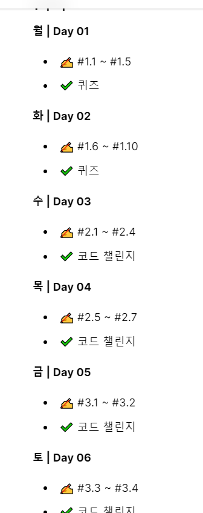

Front-end

Definition
프론트엔드(Frontend)의 영역이 점점 커지고 있다. 과거의 프론트엔드는 HTML과 CSS와 약간의 Javascript(이하 JS)를
다루는 영역이었다.
흔히 웹 퍼블리셔의 역할인 UI개발이 주된 업무였다. 하지만, 웹의 기능이 복잡해지고 동적
요구사항이 늘어나면서 과거 방식은 한계에 이르렀다.
JS가 다루어야 할 영역은 점점 커졌고, 백엔드의 비즈니스
로직 일부는 프론트로 이전되었다. 이제는 더 이상 서버에서 View를 담당하지 않는다.
서버는 핵심 비즈니스 로직을 작성하고, 필요한 데이터를 프론트에 제공한다.
프론트에서 해야 할 일이 많아지면서 다양한 기술이 등장했다.
리로딩 없이 빠른 속도로 페이지를 전환하기 위한 SPA(Single Page Application), 여러 JS파일을
하나의 파일로 번들링하기 위한 Webpack, 현재 브라우저에서 지원하지 않는 문법을 사용하도록 도와주는
Babel 등 다양한 기술이 쏟아졌다. React나 Vue 같은 프론드엔드 전용 프레임워크는 이제 선택이 아닌 필수다.
Curriculum of Front end

전 사용자에게 보여지는 웹어플리케이션 개발(UI/UX)
HTML, CSS, JavaScript(백엔드 서버로부터 데이터 통신), Typescript(요새 많이 쓰며 JavaScript보다 낫다는 평이 많다고 한다.)
더 큰 프로젝트를 한다면 css전처리기 LESS, SASS, Postcss를 학습해야한다. (라이브러리, 프레임워크)
- 생활코딩 HTML ⭕
- 생활코딩 CSS ⭕
- 생활코딩 JavaScript ⭕
- 노마드코더 바닐라js수업(예습) ⭕
- Day 1 ⭕-2021년 3월 17일
- Day 2 ⭕-2021년 3월 19일
- Day 3 ⭕-2021년 3월 31일
- Day 4 ⭕-2021년 3월 31일
- Day 5 ⭕-2021년 4월 2일
- Day 6 ⭕-2021년 4월 2일
- Day 7 ⭕-2021년 4월 5일
- Day 8 ⭕-2021년 4월 5일
- Day 9 ⭕-2021년 4월 6일
- Day 10⭕-2021년 4월 6일
- Day 11⭕-2021년 4월 6일
- Day 12⭕-2021년 4월 6일
- Day 13⭕-2021년 4월 6일
- Day 14⭕-2021년 4월 6일
- 노마드코더 바닐라js로 그림판만들기📌

- html, css, JavaScript로 계산기 만들어보기📌
- 생활코딩 ajax
- 생활코딩 git,github(필수)
- 유튜브 엘리의 드림코딩 수업(반응형 헤더 만들기(나중에 볼 동영상 목록에 있음))
- 드림코딩 포트폴리오 사이트 강의 수강(금액 약 7만원)
- 드림코딩 유튜브 따라만들기
➕Junior Full Stack Developer Step
- Junior Full Stack Developer Step
- HTML CSS
- 모든 태그, 용어를 다 외우는게 절대아님 구글링이 있음
- 구조와 원리를 이해하고 어떻게 사용하는지 이해하는것에 초점을맞춤
- 어지간한 웹사이트화면을 딱 보고 클론코딩할정도 까지 공부
- 바닐라JS
- 프레임워크를 일찍하지말고 가장기초이자 핵심인 바닐라js를 깊이공부 -> 깊이다져놓을수록 나중에 리엑트,뷰 등 프레임워크를 배우는것이 쉬워짐(시간을아낄수있음)
- "모달창 슬라이더 메뉴 드래그엔드랍" 등 웹의 인터렉티브한 부분을 바닐라js로 능숙하게 구현해낼수있을정도 까지 익혔으면, 다음 단계로 넘아가도됨(프레임웍, 백앤드 등)
- 백엔드
- NodeJS든 뭐든, 언어는 아무거나 가능
- 백엔드에서 CRUD를 구현해 내기
- '생성 읽기 수정 삭제' 가 되는 시스템을 만들어낸다는 것은, 결국 HTML,CSS,JS, DB, 등등 을 다 할줄안다는 것
- 결국 '게시판'하나를 온전히 만들어 낼수있다는 것
=> 이정도까지 왔으면 사실상 취업가능, 이때부턴 일하면서 돈도벌고 실무를 배우며 성장하는게 좋음 - 이후의 단게
- 각자의 길을 밟아가기